Stretch to win (that's me but click to simulate changing to you)
These buttons are toggle so will make the chosen infomation appear and disappear.
Background info
- These stretches to memory were the 13 chosen in Runners World in 1982 or thereabouts as a nominated best 13. I have often used them
in all these years, yeh 43 years. I am dedicated to stretching and diverse exercise as helpful. If you glance down the table however you will see there
are 15 rows. Plus 2 without pictures. This is since -
(a) - I found these 2 stretches additional stretches due to my Triathlon training (they are the itb ones) where I believe there is a big connection
with ilio tibial band wasting. tbh however I have not remembered them so often.
(b) - the missing photos. I have not taken those particular photos yet. As a Personal Trainer you would want them
in and if you want me to advise for the IT/admin angle this is is both useful for the office and makes a webpage and can be self managed
with my home office teaching and ideas.

| [] | thumb | name | body where | description |
| 0 | 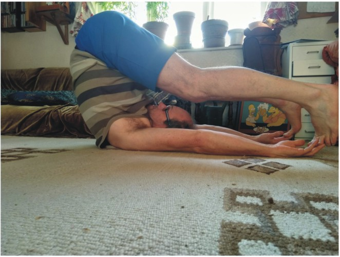 | backover | middle | Always been easy for me but I was aiming to have toes on the ground. |
| 1 | 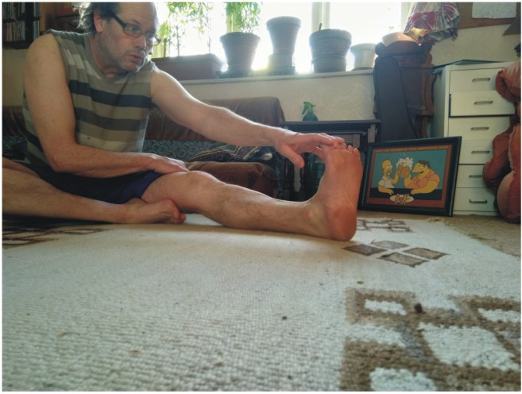 | forwardstretch | thighs, hams but you can massage quads | Feels vital to reach the toes so good for any warm up to know you are not too stiff for this |
| 2 | 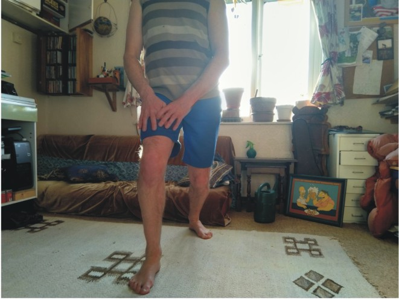 | planthold | middle and inner quad | Trying to both have hands on the forward knee and upright posture is difficult but the stretch is in the legs and groin./td> |
| 3 | 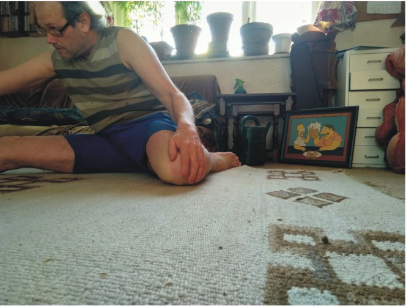 | hurdlestretch | hams one side quads other for each side | feels like the most athletic stretch |
| 4 | 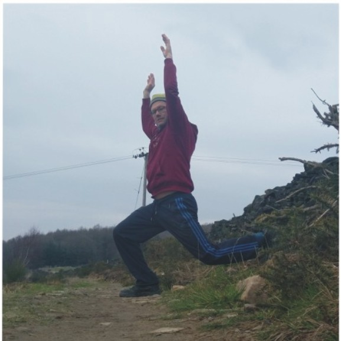 | itb4ward | middle and quad | put the back foot on a feature and dip the front knee to feel massive relief and give if you have legs like mine |
| 5 | 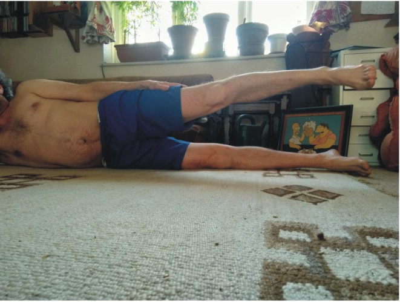 | itbhip | middle to knee | I remember now itb is iliotibialband. For endurance this is very important and can perish quietly |
| 6 | 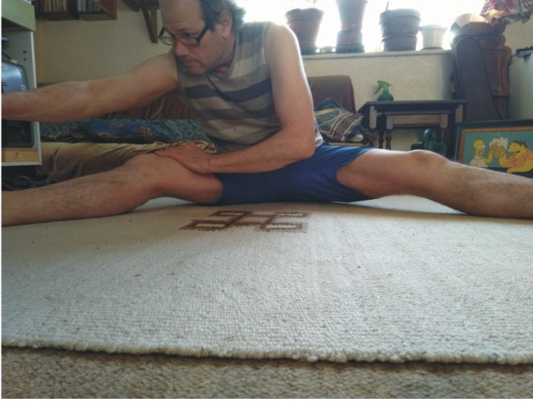 | legacross | groin | gymnasts make this look different to those of us who still are just happy to be touching toes here and surprised it never goes further |
| 7 | 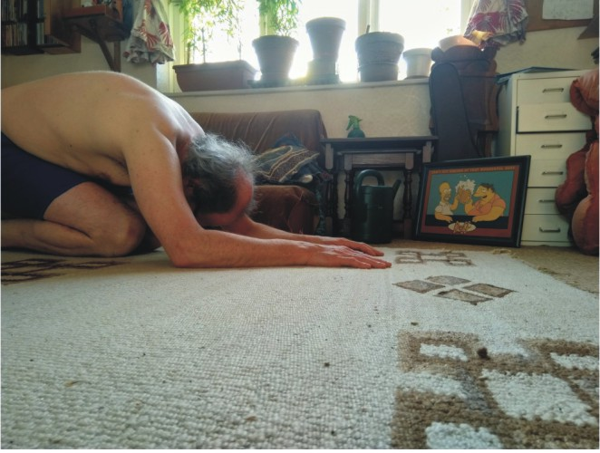 | longbackneeling | legs primarily if needing it despite looking like back, otherwise full body | feels like the praying posture keeps some people stretched here |
| 8 | 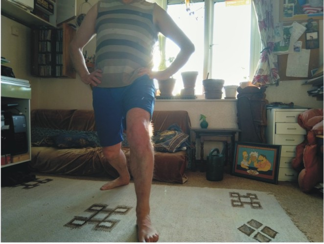 | plough | quads and hams alternatively with lower leg and achilles | the runners classic look |
| 9 | 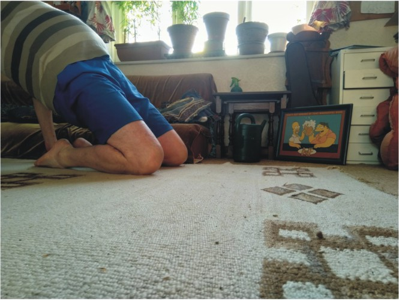 | quadsupper | middle and quads and calfs | like a toning exercise but very sudden on the demand for resistance and strength to hold |
| 10 | 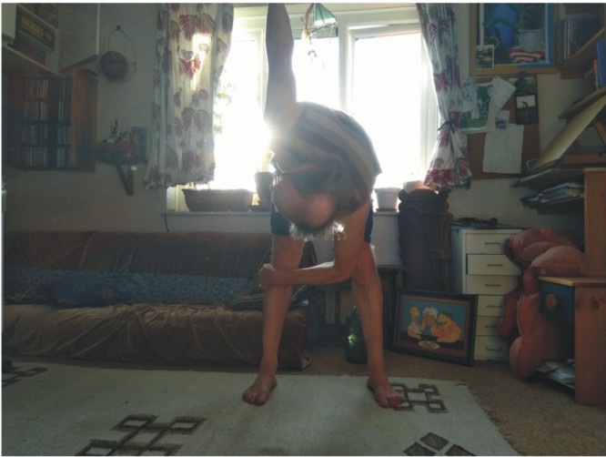 | seestars | middle and arms/shoulders/neck | try to follow the hand upwards to see stars and of course be touching toes with the other alternatively |
| 13 | 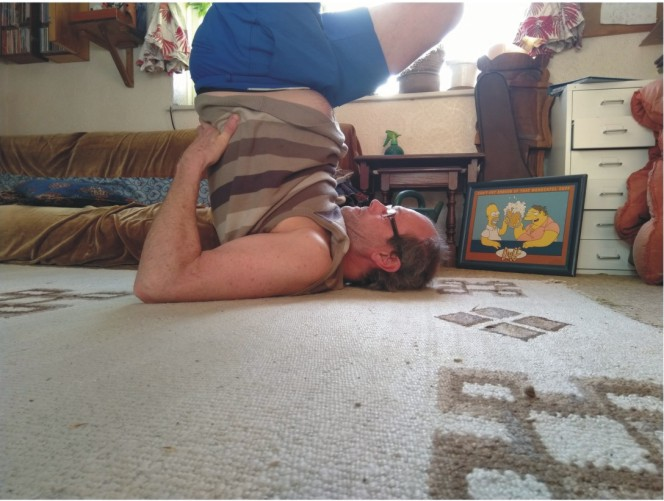 | upsidewheel | neck and shoulders | always been a routine rather than an accomplishment. I think the aim is probably the back but the motion is to make cycles with the legs like on a bike |
| 14 | 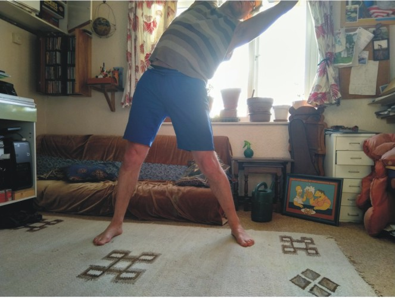 | sides | hips and through legs to shoulders | relax doing this to gain a stretch by holding it if like me usually not going too far easily. The arms stretching reveals successful release of the midsection |
| 11 | armrotate | shoulders, arms and back | use a smooth motion and avoid clicking | |
| 12 | normaltoes | full body | should be easy and with this time can be spent converting to getting out legs, arms or back niggles |
Troubleshooting
For more contact details follow the 'leave page' link in yellow just above the table to the hasbyjim.online webpage.